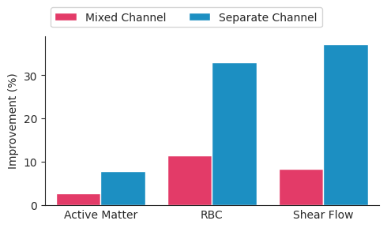

Performance improvements when finetuning on downstream tasks
compared to training from scratch. Higher is better.
We finetuning the pre-trained PDE-Transformer on different downstream tasks. Specifically, we consider
the active matter, Rayleigh-Bénard convection, and shear flow datasets from
The Well, which described non-linear phenomena arising in
computational biology, fluid dynamics and thermodynamics.
The selected datasets have setups for periodic and
non-periodic boundary conditions, non-square domains, different physical channels and high resolutions of up to 512x256, demonstrating
the capabilities of PDE-Transformer.
We find that finetuning a pre-trained PDE-Transformer on these tasks improves the performance compared to training from scratch.
Importantly, finetuning is more efficient for the separate channel version, which learns a more disentangled representation of the physical channels.